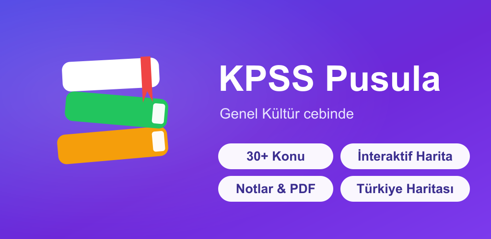

Dersler
Genel Kültür ve Türkçe — beş alan, sade dille ve tuzak uyarılarıyla.
Neler var?
Okumaktan sınamaya, haritadan kampa — çalışmanın her adımı.
Konu Anlatımı
52 konu; günlük dille, 🔑 kritik bilgi ve 🪤 tuzak uyarılarıyla, kalıcı öğrenme için özetlerle.
İnteraktif Türkiye Haritası
81 il; bölgeler, iklim, göller, dağlar, tarım, madenler katmanları. İle dokun, bilgisi açılsın; harita testi ile kendini sına.
700+ Soru & Test
Ders ders veya karışık test; her soru açıklamalı ve tek dokunuşla ilgili konunun tam satırına götürür.
10 Deneme Sınavı
Gerçek KPSS dağılımıyla 60 soruluk denemeler. Netin ve yanlışların kaydedilir; yanlıştan konuya git.
Hızlı Tekrar
Dönemleri tek ekranda özetle: İslam öncesi, Beylikler, 36 Osmanlı padişahı, Milli Mücadele, Coğrafya ve Vatandaşlık.
Kamp Modu
Sınav geri sayımı, çalışma planı, pomodoro zamanlayıcı, gün serisi ve tur takibi — hepsi düzenli iki sekmede.
Kişiselleştir
Bilgiyi düzelt, kendi konunu ekle, haritaya kendi notunu bırak — istediğinde orijinaline geri al.
PDF & Notlar
Kendi PDF'ini ekle, içinde ara, sayfaya not tut; konu özetlerini Notlarım'da sakla.
Koca dönemleri
tek ekranda topla.
Sınav öncesi son tekrar için tasarlandı. Açılır kartlarla İslam öncesi Türk devletlerinden 36 Osmanlı padişahına, Milli Mücadele'den Türkiye coğrafyasına kadar en çok sorulanları hızlıca gözden geçir. ⭐ = çok sorulan.
Hemen Dene
Hakkında
KPSS Pusula, KPSS Genel Kültür hazırlığını kolaylaştırmak için hazırlanmış bağımsız bir çalışma uygulamasıdır. Konuları okuyabilir, Türkiye haritası üzerinden tekrar edebilir, 700+ soru ve deneme sınavıyla kendini ölçebilir, kendi notlarını cihazında saklayabilirsin. Her şey çevrimdışı çalışır. Hemen web sürümünü deneyebilirsin.